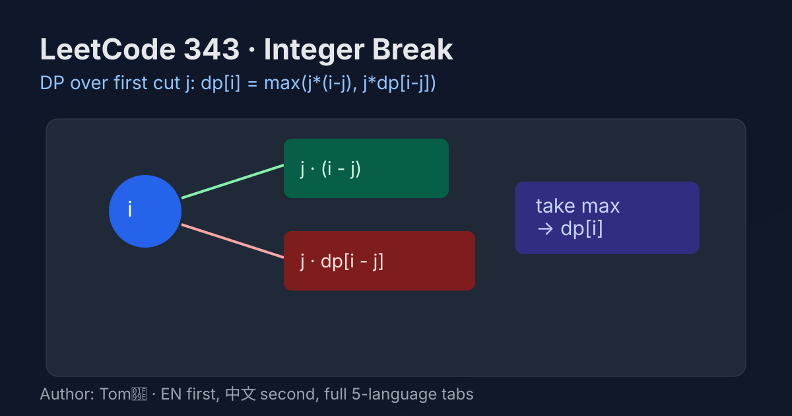

LeetCode 343: Integer Break (DP Over First Cut Choices)
LeetCode 343Dynamic ProgrammingMathToday we solve LeetCode 343 - Integer Break.
Source: https://leetcode.com/problems/integer-break/

English
Problem Summary
Given an integer n, split it into at least two positive integers, and maximize the product of those integers. Return the maximum product.
Key Insight
For each target sum i, try every first cut j (where 1 <= j < i). The right part i-j has two options:
1) Do not split further: product is j * (i - j)
2) Split further optimally: product is j * dp[i - j]
Take the maximum over all cuts. This naturally defines a bottom-up DP.
Brute Force and Limitations
Brute force tries all partition trees, which grows exponentially. Even with pruning, it becomes too slow for repeated states. DP memoizes those repeated subproblems and reduces work to polynomial time.
Optimal Algorithm Steps
1) Create dp where dp[i] is the best product for integer i after at least one split.
2) Initialize dp[2] = 1.
3) For each i from 3 to n, enumerate j from 1 to i-1:
update dp[i] = max(dp[i], j*(i-j), j*dp[i-j]).
4) Return dp[n].
Complexity Analysis
Time: O(n^2) because of nested loops over i and j.
Space: O(n) for the DP array.
Common Pitfalls
- Forgetting the "at least two integers" rule (for example n=2 should return 1).
- Only using j*(i-j) and forgetting j*dp[i-j].
- Starting loops at wrong bounds and missing valid cuts.
Reference Implementations (Java / Go / C++ / Python / JavaScript)
class Solution {
public int integerBreak(int n) {
int[] dp = new int[n + 1];
dp[2] = 1;
for (int i = 3; i <= n; i++) {
for (int j = 1; j < i; j++) {
dp[i] = Math.max(dp[i], Math.max(j * (i - j), j * dp[i - j]));
}
}
return dp[n];
}
}func integerBreak(n int) int {
dp := make([]int, n+1)
dp[2] = 1
for i := 3; i <= n; i++ {
for j := 1; j < i; j++ {
noSplit := j * (i - j)
split := j * dp[i-j]
if noSplit > dp[i] {
dp[i] = noSplit
}
if split > dp[i] {
dp[i] = split
}
}
}
return dp[n]
}class Solution {
public:
int integerBreak(int n) {
vector<int> dp(n + 1, 0);
dp[2] = 1;
for (int i = 3; i <= n; ++i) {
for (int j = 1; j < i; ++j) {
dp[i] = max(dp[i], max(j * (i - j), j * dp[i - j]));
}
}
return dp[n];
}
};class Solution:
def integerBreak(self, n: int) -> int:
dp = [0] * (n + 1)
dp[2] = 1
for i in range(3, n + 1):
for j in range(1, i):
dp[i] = max(dp[i], j * (i - j), j * dp[i - j])
return dp[n]/**
* @param {number} n
* @return {number}
*/
var integerBreak = function(n) {
const dp = new Array(n + 1).fill(0);
dp[2] = 1;
for (let i = 3; i <= n; i++) {
for (let j = 1; j < i; j++) {
dp[i] = Math.max(dp[i], j * (i - j), j * dp[i - j]);
}
}
return dp[n];
};中文
题目概述
给定正整数 n，把它拆分成至少两个正整数，使这些整数乘积最大，返回这个最大乘积。
核心思路
对于每个目标和 i，枚举第一刀切点 j（1 <= j < i）。右边的 i-j 有两种处理：
1）不再拆分：j * (i - j)
2）继续按最优拆分：j * dp[i - j]
对所有 j 取最大值，就得到 dp[i]，这是标准的自底向上动态规划。
暴力解法与不足
暴力会枚举所有拆分树，状态数量呈指数增长，重复子问题很多。DP 正是把这些重复计算缓存下来，将复杂度降到 O(n^2)。
最优算法步骤
1）定义 dp[i]：整数 i 至少拆一次后能得到的最大乘积。
2）初始化 dp[2] = 1。
3）遍历 i = 3..n，再遍历 j = 1..i-1：
更新 dp[i] = max(dp[i], j*(i-j), j*dp[i-j])。
4）返回 dp[n]。
复杂度分析
时间复杂度：O(n^2)。
空间复杂度：O(n)。
常见陷阱
- 忘记“必须拆成至少两个整数”的约束（如 n=2 应返回 1）。
- 只写 j*(i-j)，漏掉 j*dp[i-j]。
- 枚举边界写错，导致合法切分没有被统计。
多语言参考实现（Java / Go / C++ / Python / JavaScript）
class Solution {
public int integerBreak(int n) {
int[] dp = new int[n + 1];
dp[2] = 1;
for (int i = 3; i <= n; i++) {
for (int j = 1; j < i; j++) {
dp[i] = Math.max(dp[i], Math.max(j * (i - j), j * dp[i - j]));
}
}
return dp[n];
}
}func integerBreak(n int) int {
dp := make([]int, n+1)
dp[2] = 1
for i := 3; i <= n; i++ {
for j := 1; j < i; j++ {
noSplit := j * (i - j)
split := j * dp[i-j]
if noSplit > dp[i] {
dp[i] = noSplit
}
if split > dp[i] {
dp[i] = split
}
}
}
return dp[n]
}class Solution {
public:
int integerBreak(int n) {
vector<int> dp(n + 1, 0);
dp[2] = 1;
for (int i = 3; i <= n; ++i) {
for (int j = 1; j < i; ++j) {
dp[i] = max(dp[i], max(j * (i - j), j * dp[i - j]));
}
}
return dp[n];
}
};class Solution:
def integerBreak(self, n: int) -> int:
dp = [0] * (n + 1)
dp[2] = 1
for i in range(3, n + 1):
for j in range(1, i):
dp[i] = max(dp[i], j * (i - j), j * dp[i - j])
return dp[n]/**
* @param {number} n
* @return {number}
*/
var integerBreak = function(n) {
const dp = new Array(n + 1).fill(0);
dp[2] = 1;
for (let i = 3; i <= n; i++) {
for (let j = 1; j < i; j++) {
dp[i] = Math.max(dp[i], j * (i - j), j * dp[i - j]);
}
}
return dp[n];
};
Comments